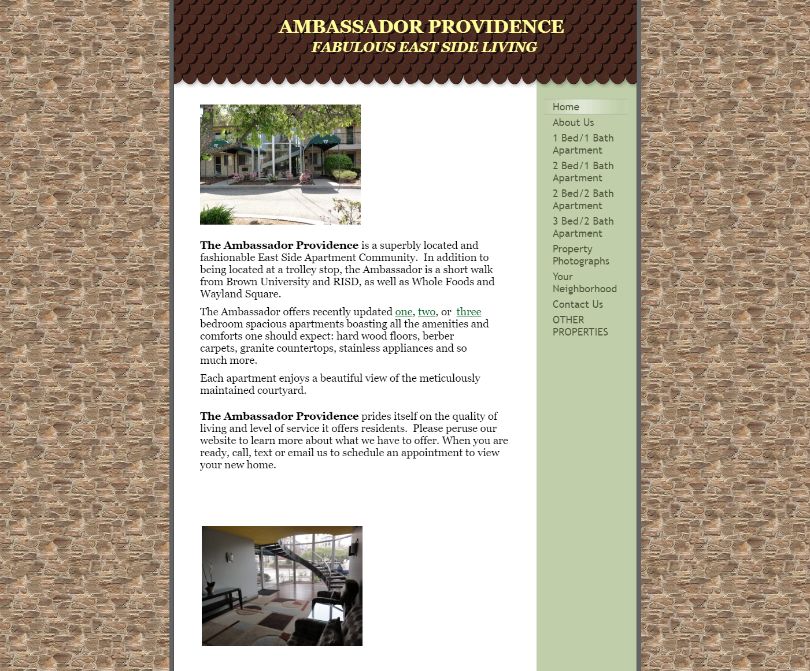

Responsive Redesign Assignment
A project showcasing responsive web design through the Ambassador Providence website case study. Responsive design is not just about making a website viewable on any device, it's about delivering an intuitive user experience. First exploring fundamental usability issues that impact user engagement.
Identifying Usability Problems
The Ambassador Providence Home Page was chosen for its initial promotional impact on users but lacks in UI/UX design (shown below).

Try Hover Below!
Visual Hierarchy Issues: Text blocks have dense fonts and lack spacing, reducing readability. Menu items blend into backgrounds, needing more contrast.
Layout and Navigation Challenges: Images and text lack proper spacing, cluttering the site. The homepage uses block layout, but the navigation bar scrolls away, reducing accessibility.
Grouping and Accessibility Concerns: The navigation menu is unclear and cramped, with some redundant information. Content areas are unorganized, merely stacked.
Accessibility problems: Acknowledging issues identified by WebAIM WAVE, the site needs improved headers, image alt texts, and navigation accessibility to enhance usability for all visitors.
Visual Redesign
Exploring usability issues highlights the significance of design in user experience, encompassing aesthetics, functionality, and accessibility. A step-by-step redesign process, from sketches to a final draft, emphasizes multi-device adaptability, including desktops and mobile devices.
Visual Design Style Guide
A guide to ensure consistency across visual elements such as typography and color schemes.